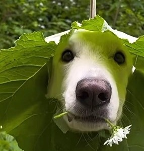
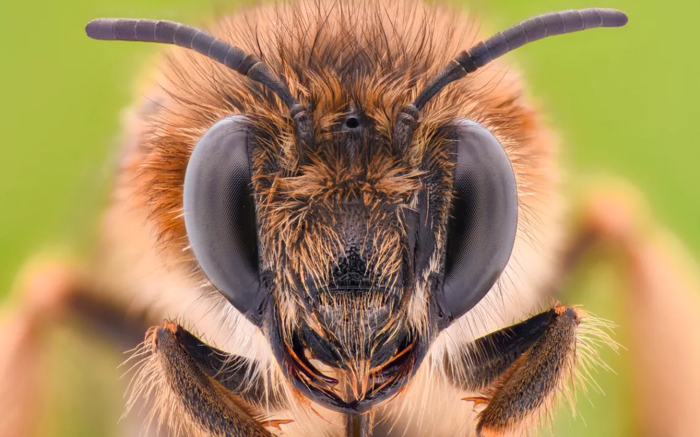
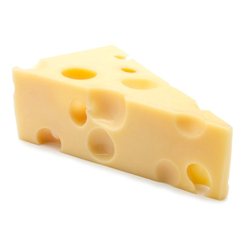

About Her
Ayla is a layed back and mellow dog. She likes to be around people and is known for her friendly nature. She isn't as social as other dogs and would prefer to be playing alone. If you want a dog with a low need for social interaction then she is perfect.


What she likes
Aylas' favourite thing in the world is flowers, she always has one in her mouth. If you take her flower she will not be happy with you. On the other hand, if you give her a flower, she will reward you generously.


What she dislikes
Ayla hates bees as they always sting her when she goes to pick a flower. She also dislikes fizzy water as it tastes weird unlike water. She likes most foods except cheese which is quite odd as most dogs love it.

